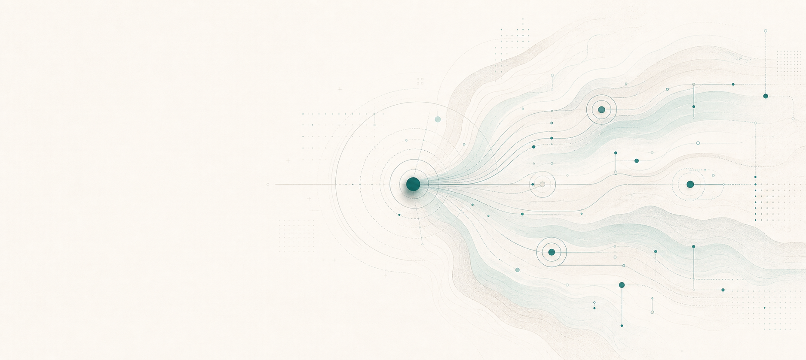
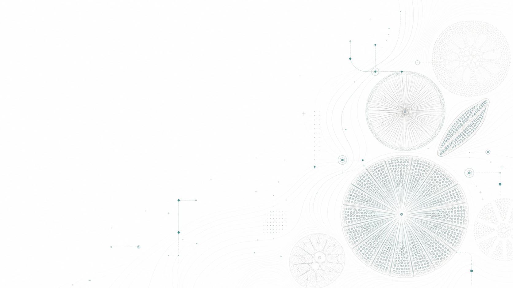

Market Briefs
Short, timely commentary based on approved market sources and your firm’s narrative.
> See demoManaged Market Intelligence Workflow
A managed market intelligence workflow that turns approved sources, market developments, and brand context into review-ready communication across your chosen channels.
Book a 20-minute workflow walkthroughDaily Signals turns approved sources, market developments, and brand context into review-ready communication across the channels your firm already uses.
Short, timely commentary based on approved market sources and your firm’s narrative.
> See demoStructured updates for clients, users, investors, partners, or community audiences.
LinkedIn-ready thought leadership shaped from market events, founder input, and brand context.
Channel-ready prompts, explainers, and updates for Telegram, Discord, Slack, or product-led communities.
Digestible versions of longer research, reports, theses, or product insights.

Daily Signals turns one managed market intelligence workflow into review-ready communication across email, LinkedIn, community, client update, and blog channels without fragmenting your brand system.
Under the hood, the Daily Signals workflow turns approved market inputs into structured, review-ready communication.
We connect the market sources, research inputs, and brand context agreed with your team.
The workflow converts relevant signals into review-ready outputs in your firm’s voice.
Your team can approve, edit, or request changes before anything is published.
Approved outputs are prepared for the channels and formats selected during setup.
Editorial feedback and performance data improve the workflow over time.
Book a 20-minute workflow walkthrough and watch the workflow run end-to-end.
Book a 20-minute workflow walkthroughReview-ready communication is produced on an agreed cadence or around defined market triggers. Newsletters, client updates, LinkedIn posts, community prompts, and blog drafts are prepared in your brand and voice.
Approved and distributed outputs can be tracked with channel-based metrics, including open rates, click-through rates, engagement levels, completion rates, and delivery logs.
You receive weekly summaries and monthly reports in the formats we agree on. Reports include metrics like output volume, review status, distribution activity, and performance across selected channels.
Monthly sessions cover performance review, editorial adjustments, timing and cadence decisions, and recommendations on channel mix and content strategy.

We assess your current communication workflow, market coverage, constraints, and goals to determine what the workflow needs to support.
A structured questionnaire is provided with key fields pre-filled based on the discovery process. You only complete the missing information and any clarifications required.
We design templates, content structures, source rules, review steps, tone rules, and workflow logic using your brand assets and style guidance.
A short pilot run produces real outputs under your brand. This allows stakeholders to evaluate tone, accuracy, and suitability without requiring a large internal team.
The workflow runs on a fixed cadence or according to agreed triggers. It prepares, routes, and tracks outputs while your team reviews and guides priorities.
Regular reviews assess performance and implement adjustments to editorial rules, formats, timing, triggers, and channels.
Daily Signals turns approved sources and market developments into review-ready financial communication across newsletters, LinkedIn, blogs, client updates, community channels, and more.
It is a managed market intelligence workflow. OM Digital builds, operates, and maintains the workflow for you.
The workflow can be configured with different levels of automation. Most clients begin with draft-only or review-first workflows, then increase automation once rules and confidence are established.
You do not need a large internal production team. OM Digital handles the workflow, while your team retains editorial control and can review outputs before publishing.
The workflow is designed to reduce hallucination risk through approved sources, structured prompts, source-grounded drafting, review gates, and client-defined editorial rules.
Any open-source feed, any paid vendor you already subscribe to, and your own proprietary research or internal notes.
Yes, where appropriate. Daily Signals can operate as draft-only, review-first, or approved publishing. The publishing model is defined with the client before launch.
Yes. Multiple languages, multi-brand setups, and asset-specific versions such as NVDA or TSLA are supported.
All distributed content is tracked with agreed KPIs such as opens, clicks, engagement, completion, and delivery results. Weekly summaries and monthly reports are included.
Onboarding takes two to three weeks depending on scope. You begin receiving outputs about one week after configuration is complete.